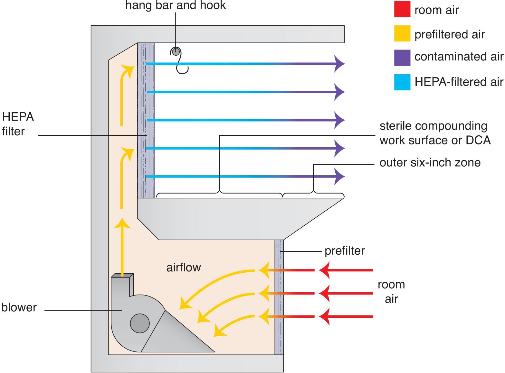
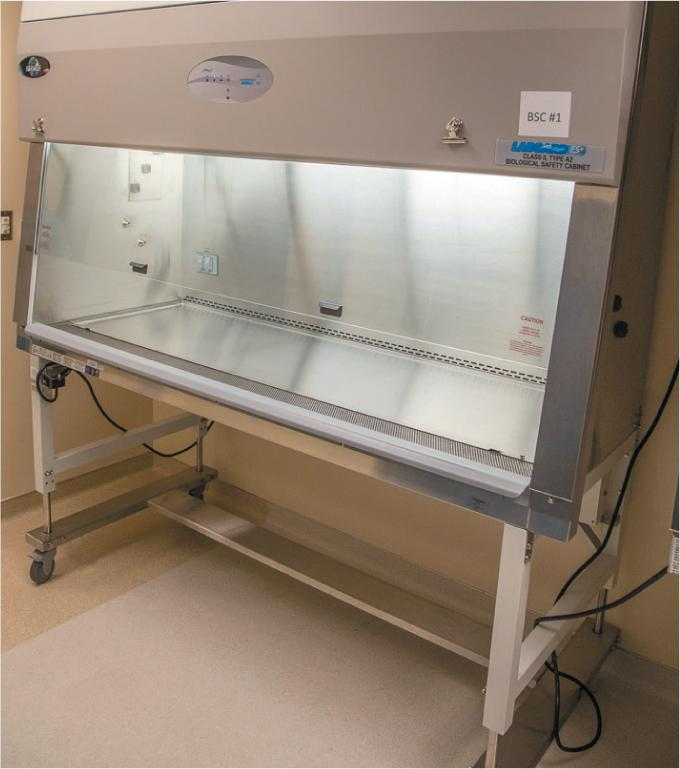
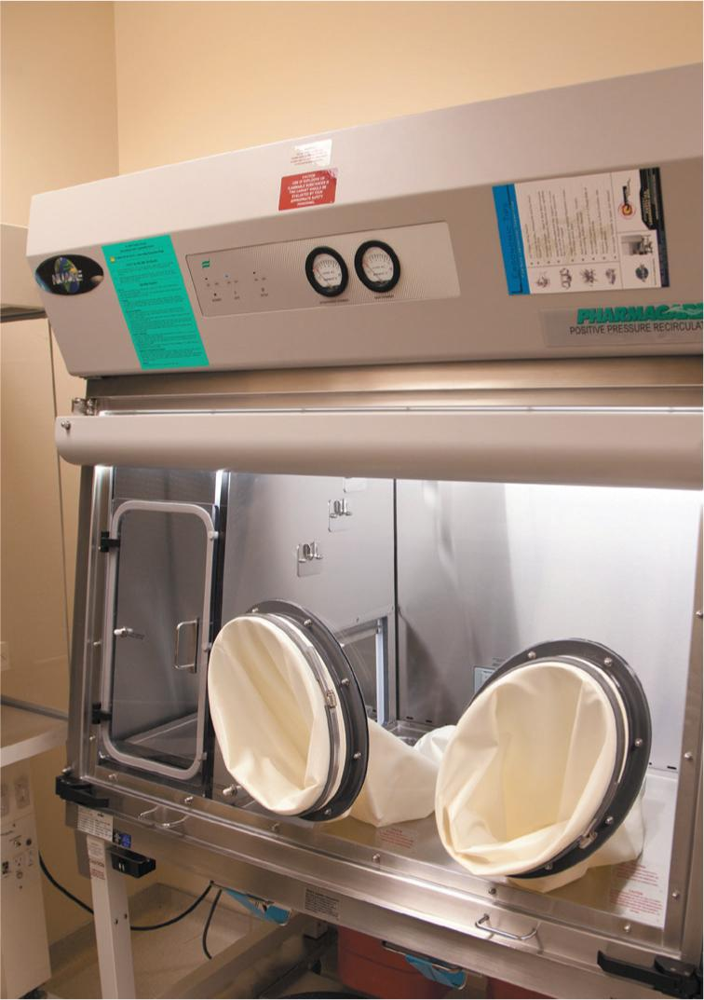

PART 1: CONCEPTS
4.3 Airflow Systems Used in Sterile Compounding
PECs in the sterile compounding environment may be categorized in two ways: laminar airflow systems and restricted-access barrier systems. These systems are similar in that they both blow HEPA-filtered air across a work surface as well as provide the ISO Class 5 environment required by USP <797> standards. Laminar airflow systems include the horizontal LAFW and the vertical airflow systems such as the integrated vertical airflow zone and the biological safety cabinet. Restricted-access barrier systems are fully enclosed and include a compounding aseptic isolator and a compounding aseptic containment isolator.
Laminar Airflow Systems
Sterile compounding personnel frequently prepare CSPs in PECs that use a laminar airflow system (LAFS). An LAFS provides the ISO Class 5 environment mandated by USP <797> for sterile compounding procedures. This system uses a blower to force air either horizontally or vertically across the DCA of a work surface. PECs that use an LAFS include a horizontal laminar airflow workbench, vertical laminar airflow workbench, integrated vertical laminar airflow zones, and biological safety cabinets. Blowers on these PECs should remain activated. If, for any reason, a blower is turned off, it must be turned back on and allowed to run for at least 30 minutes (or as recommended by the manufacturer) before use.
Sterile compounding personnel should be aware that some PECs that use an LAFS help to prevent contamination of CSPs but offer no protection for personnel or the environment. Therefore, personnel must never compound antineoplastic hazardous drugs in these PECs. A biological safety cabinet, another type of PEC that uses an LAFS, is used for the compounding of HDs because this cabinet has negative pressure.

Horizontal Laminar Airflow Workbench
As mentioned earlier, a horizontal laminar airflow workbench (LAFW) is the most common PEC used in sterile compounding (see Figure 4.3). In this open-front PEC, a blower draws room air through the prefilter, which removes large particles that might damage the HEPA filter. The air is then forced further into the PEC, through the HEPA filter, and then across the DCA, an area that begins approximately six inches from the outer edge of the PEC’s work surface. Sterile compounding personnel perform all procedures within the DCA because air velocity slows as it reaches the outer edge and the filtered air may mix with room air.
Integrated Vertical Laminar Flow Zones
An integrated vertical laminar flow zone (IVLFZ) is similar to a vertical LAFW; however, this airflow system is built into the buffer room. HEPA filters line the ceiling area above stainless-steel worktables. These filters are surrounded by panels that direct the airflow downward. Strategically placed exhaust vents that are low in the wall behind the worktables help to create a unidirectional airflow.
An IVLFZ serves as a PEC and is designated as an ISO Class 5 area. This type of airflow system is typically designed to be used in facilities that produce a large number of CSPs and, therefore, need to have a significant number of sterile compounding personnel working in the IVLFZ during a given shift. IVLFZs are relatively uncommon because their open-air design and large surface areas make it difficult to achieve and maintain proper airflow and air pressure. For these reasons, IVLFZs should never be used to compound HDs.
Biological Safety Cabinets
Another type of LAFS is a biological safety cabinet (BSC). Unlike an LAFW or an IVLFZ, a BSC has negative pressure, so HEPA-filtered air is contained in the cabinet until it is exhausted to the outdoors. Therefore, it is also referred to as a containment primary engineering control (C–PEC). C–PECs are used to compound HDs because they protect the CSP, personnel, and the environment from contaminants.
In a BSC, room air enters the cabinet through small holes at the front edge of the work surface. In some cabinets, room air is drawn into a BSC through a prefilter that filters out dust, dirt, and other airborne particulate matter. The blower within the cabinet then moves the air under the work surface, up the back of the cabinet toward the ceiling, and then down through the HEPA filter. Air from the HEPA filter is then pulled downward through exhaust holes around the perimeter of the work surface, back under the work surface, and through another HEPA filter before it is exhausted outside the facility.
A clear shield at the front of a BSC typically moves up and down so that sterile compounding personnel can control the front opening. During compounding procedures, the shield must be positioned as recommended by the manufacturer to ensure the safety of personnel. Because closing the shield turns off a BSC, this action should only be performed when a BSC is moved or being serviced.

Restricted-Access Barrier Systems
A restricted-access barrier system (RABS) is a fully enclosed PEC that has glove ports to provide a physical separation between the DCA and the surrounding areas. A RABS contains an ISO Class 5 work chamber with an adjacent access chamber on one or both sides. This setup allows for the ingress and egress of supplies from the access chamber into the work chamber without the introduction of potential contaminants.
The front of a RABS contains one or more pairs of gloves attached to sleeves fixed to the inner wall. Sterile compounding personnel place their hands inside the gloves and reach through the inner pass-through window to bring supplies from the access chamber into the ISO Class 5 chamber where sterile compounding procedures occur. At the completion of the procedures, personnel place the CSP into the access chamber so that the medication can be removed through the outer door.
All access doors of a RABS must be closed during material transfer to the DCA and during sterile compounding to maintain an ISO Class 5 environment. Consequently, when sterile compounding personnel open an access door, there is a short recovery time, generally one minute or less, before ISO Class 5 air quality resumes. The manufacturer of a RABS unit determines this recovery time, and sterile compounding personnel must be trained to acknowledge this period before initiating compounding procedures. Procedures regarding RABS use and recovery time should be included in a facility’s SOPs manual.
To meet quality assurance and safety standards, sterile compounding personnel must perform dynamic airflow smoke pattern tests initially and at least every six months to ensure that a RABS is operating as designed and that all personnel are using it as intended. (For additional information on dynamic airflow smoke pattern tests, see the section titled “Environmental Monitoring” later in this chapter.)
There are two types of RABS: a compounding aseptic containment isolator and a compounding aseptic isolator. Both types of RABS incorporate a completely enclosed design, which is comprised of two interconnected compartments. One compartment has an exterior door through which compounding supplies are placed into the cabinet and through which completed CSPs are removed from the RABS. The second compartment is accessed through an attached pair of sleeves and gloves. Once personnel place their hands/arms into the sleeve-and-glove units, they open an ingress/egress door to access the supplies and bring them inside the inner chamber for use during sterile compounding.
Compounding Aseptic Containment Isolator
Like a BSC, a compounding aseptic containment isolator (CACI) is considered a C–PEC because its design protects sterile compounding personnel and the environment during the compounding of HDs. A CACI must run continuously, and its airflow is exhausted through a HEPA filter before being vented outside a facility.

Compounding Aseptic Isolator
A compounding aseptic isolator (CAI) is a PEC that provides the required ISO Class 5 environment for CSP preparation. However, the CAI offers no protection for sterile compounding personnel. Therefore, it may not be used to compound antineoplastic hazardous drugs. As such, it should only be used to prepare nonhazardous CSPs.
Pharmaceutical Isolators
Although the terms compounding aseptic containment isolator and compounding aseptic isolator have the word “isolator” in their names, a pharmaceutical isolator is a different piece of equipment. The primary difference is that a pharmaceutical isolator has a built-in decontamination system powered by a generator. This system distributes a sporicidal agent throughout the isolator, usually followed by a purge of air to remove any residual chemicals. The use of pharmaceutical isolators is not common among pharmacies.
Robotic Devices
A relatively recent development in pharmacy practice is the use of robotic devices to prepare CSPs. Robotic devices may be used as PECs or within PECs, provided that they meet USP <797> standards. These devices typically are preprogrammed with standard orders for commonly used CSPs.
Robotic devices have several advantages. They can be very effective in reducing medication errors due to their reliance on bar-code or gravimetric technology. They can also decrease turnaround times in preparing CSPs. The disadvantages of using robotic devices are their significant cost and the advanced training needed for sterile compounding personnel. Consequently, only large health-system pharmacies typically purchase and use robotic devices.